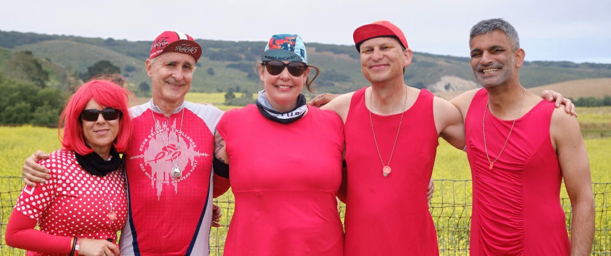

Motivating Software Engineering Teams

In my experience as a software engineer and a software engineering manager, I’ve found that the best way to motivate software engineers is with empathy, purpose, and a sense of craftsmanship. Conversely, the most effective way to demotivate a software engineering team over the long term is with excessive process and deadlines.
Let’s dive a little bit deeper into the levers I’ve found that work in motivating software engineers into doing their best work:
Empathy
The key to motivating a team is to identify what motivates the people that make up the team, with enough empathy to put yourself in their shoes.
Everyone wants to be happy, but everyone has their unique path to happiness. Learning the career and life goals of everyone on the team allows you to prime the right tasks for them at the right time.
Asking people directly, "What motivates you as a software engineer?" will often unlock the right set of hints for how to frame messages in a way that works for them. However, to get an honest and complete answer, one needs to build rapport.
Building rapport
Building rapport with the team is critical to establishing the psychological safety required for folks to feel comfortable sharing their real thoughts. My advice is to model and build a real personal connection that supersedes the synthetic relationship of the manager to the direct report.
My strategy for building connection is: demonstrating care, showing vulnerability, and deep listening. Proving that you care is something that you cannot fake. If you cannot care deeply for each person on your team, you will fail to motivate your team in the long term.
A technique I have used successfully is to declare to each person my focus: it's them, and their long-term career. As a manager, the people you inspire are the legacy you will leave behind. This advice may seem antithetical to most business guidance, but if you genuinely care for your team, you will be in a better place to inspire them. After all, as humans, we are more important than the companies in which we serve.
It is important to recognize that the average tenure at a tech company is three years, so your manager/report relationship will last on average only a year and a half, or about 5% of their career. As a manager trying to build a high-functioning team, you should focus on making the most of this overlap to set them up for the other 95% of their career. Letting your direct report know that you are on their side and in it for the long-haul will build the rapport necessary for candor.
Life stories make honest goals approachable
To build mutual respect, candor, and empathy, I like to take time in an early 1:1 to model it through sharing my life story, career journey, goals, and missteps. Next, it's your turn to listen intently to your report's own life story, noting that they may not be ready to share all of it. What you hear though, may surprise and shock you. Life isn't always sunshine and roses.
For subsequent 1:1's, I ask for the report to record their goals, both within the company and outside of it. These goals will be kept at the top of our 1:1 notes to always stay fresh within our minds when we meet. Mine reads:
Career: make large-scale computing trivial for the world
to use in a sustainable manner.
Non-career: Accelerate human knowledge. Be a great father
and spouse.
With time, you should achieve the empathy and respect necessary to understand each other's personal and professional motivation.
Purpose
Many define successful management as the ability to get the most out of the team. Now that you have learned about each individual's motivation, it is time to find the common thread that binds the team together. This shared context will help you build a plan to harmoniously fit everyone's local maximum (personal motivation) into the global maximum (personal+team+company motivation).
To discover this thread, I recommend first sharing the mission and value statements of other teams, and then letting your team discover define their own statement of values. These values should be ideals or traits that your team cannot live without. Once defined, your team is ready to create a mission statement. A mission statement should:
- Align with the mission of the group above, if applicable
- Clarify who your team serves
- Be worded precisely enough to not apply to other teams
Depending on the team size, expect that this may take three different 45-minute meetings to brainstorm and refine it. Your team may resist the idea of brainstorming a mission at first, but once they learn what everyone agrees is essential, they will appreciate the clarity.
For suggestions on how to run a successful exploration of mission statement & values, I highly recommend reading Tribal Leadership: Leveraging Natural Groups to Build a Thriving Organization by Logan, King, Fischer-Wright.
Craftsmanship
Software engineers at their heart are craftspeople. As with any other craft trade, software engineers intrinsically want to be proud of what they create. Craftsmanship is an important trait to cultivate as it paves the way for:
- High morale
- Product excellence
- Prevention of technical debt
Even when one is racing the revenue clock, deprioritizing craftsmanship is never the answer. If you push engineers toward deadline-driven development, you may very well be causing them to lower the code quality bar. If not addressed immediately, the decreased code quality generates a vicious circle of low morale, low velocity, high turnover, and an ever-increasing pile of technical debt.
If you encourage your team to build artifacts (code, design docs) that they can be proud of throughout their career, you will no longer have to worry much about motivation.
For more on craftsmanship in software, I recommend Software Craftsman, The: Professionalism, Pragmatism, Pride by Sandro Mancuso.